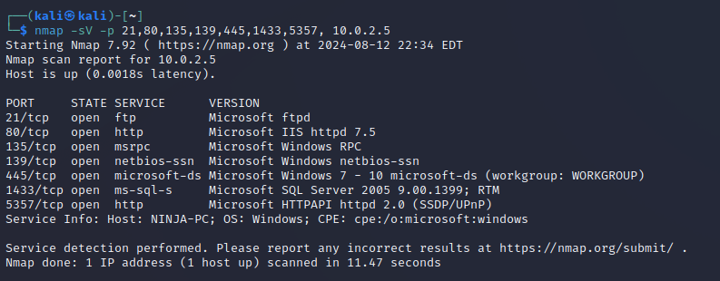

CASE STUDY 02 / WINDOWS SECURITY
Windows Vulnerability & Flag Retrieval Lab
A controlled Windows lab demonstrating service discovery, vulnerability validation and proof-of-access.
Windows 7 labNmapMetasploitSMBMeterpreter
Scope: Authorized training VM. These results describe a lab exercise, not an assessment of a live organization.
Video demonstrations
Nmap — Windows reconnaissance and enumeration
Windows account access validation
Objective
Enumerate a Windows virtual machine, assess its exposed services, validate a known SMB weakness, and retrieve designated challenge files as proof of access.
Evidence-based workflow
- Host discovery: An Nmap sweep identified the target on the virtual subnet.
- Service enumeration: The slides show FTP, HTTP, RPC, SMB and SQL Server-related ports exposed on the test Windows host.
- Vulnerability validation: A Metasploit MS17-010 module reported the target vulnerable and opened a Meterpreter session in the lab.
- Artifact collection: The exercise continued with file discovery and retrieval of designated challenge artifacts.

Security implications
The exercise illustrates why service inventory, prompt patch management and restricting SMB exposure are important. It also demonstrates how elevated access can expose files and permit account modifications, underscoring least-privilege and monitoring practices.
Source: Career Simulation 3 slide deck and presentation recording. Credential-change demonstrations are described but unredacted credentials are not published.